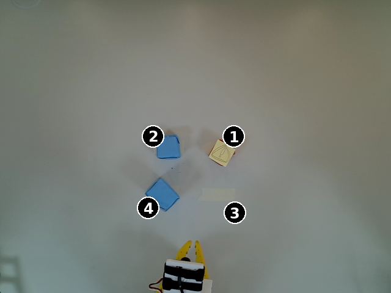
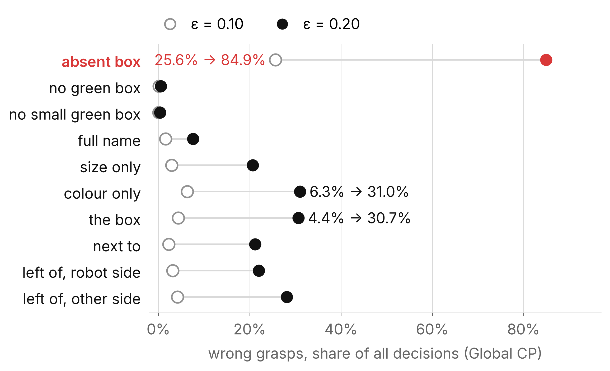
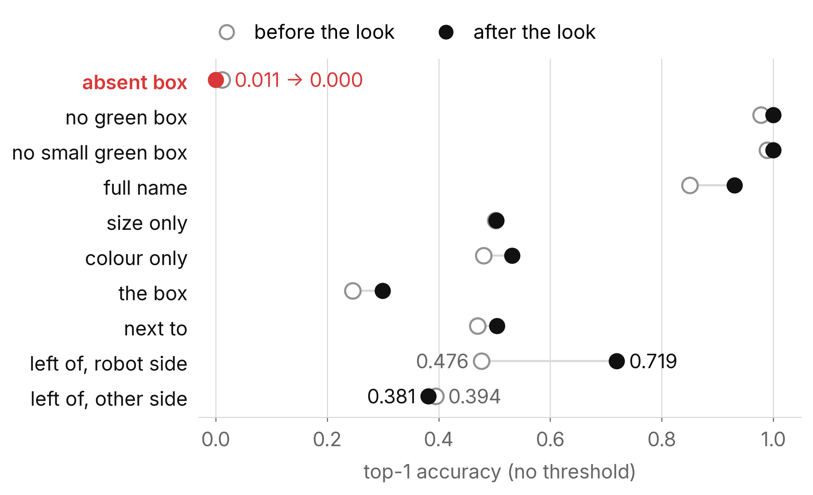
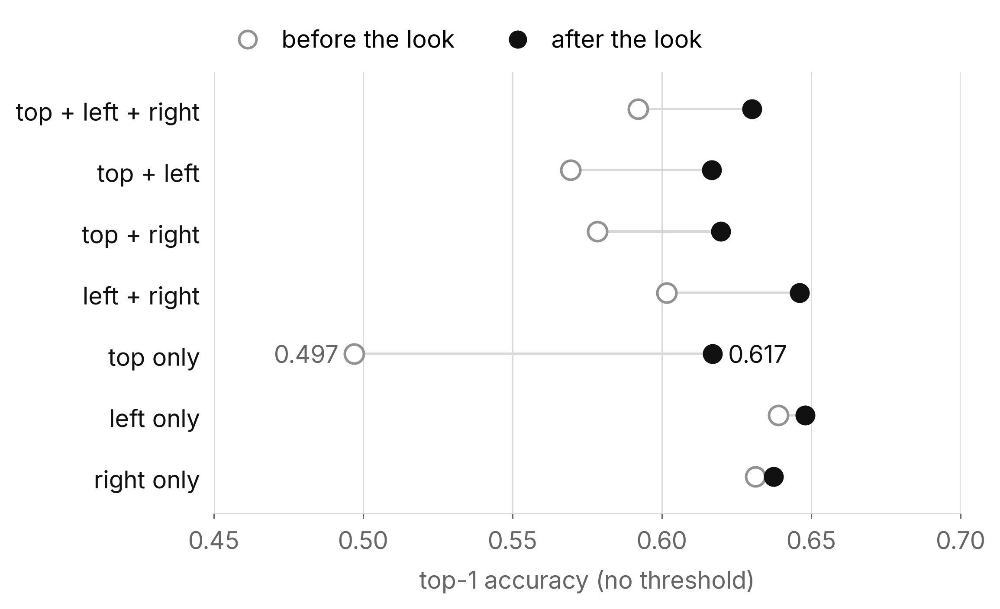

80-scene run
What each scenario tests, and how conformal prediction handles it
80 scenes · 1,296 instructions · 7 camera sets · scored before and after a wrist look

Setup
Calibration · 18 scenes
Only full-name and absent-box instructions in normal light, one row per scene: 18 rows for Global CP, 54 for the per-count threshold (18 per blocked count).
Output: the threshold. With 18 rows at ε = 0.10 it is the largest calibration score, so it swings between splits: 0.444 to 0.997 for Global CP.
Test · 19 scenes
Every instruction type and camera set: 2,261 decisions per split. Scenes kept out of the split (holdout, duplicate box, physical check, fit, dim, back-light) get the same thresholds.
Output: coverage, set size, actions, wrong grasps. All results in this deck are test results, averaged over 20 random splits.
37 of the 80 scenes can calibrate or test. Every trial was scored once without and once with the wrist image; each context gets its own threshold.
How to read the tables
| column | meaning |
|---|---|
| top-1 | share where the model's most probable label is right; no threshold involved |
| coverage | share where the right label is in the set (target 0.90 at ε = 0.10, 0.80 at ε = 0.20) |
| set | mean labels in the set, out of 5: spots 1–4 and N for “none” |
| act · ask · abstain | share of decisions: one box → act, two or more labels → ask, {N} or empty → abstain |
| wrong grasp | share of all decisions that grasp a box other than the intended one |
| look first | share the decision policy would send to a wrist look as its first move |
Defaults: Global CP (one threshold), ε = 0.10, before the look, test scenes, mean of 20 splits. For a missing box the right label is N; for a vague instruction it is the box the speaker meant.
01 · Instruction types
| scenario | example | right answer | intended first move |
|---|---|---|---|
| absent box | “Grasp the small red box”, box removed | none (N) | look, then abstain |
| no green box | “Grasp the green box”, no green box | none (N) | look, then abstain |
| no small green box | “Grasp the small green box” | none (N) | look, then abstain |
| full name | “Grasp the small blue box” | the box named | act; look if hidden |
| size only | “Grasp the small box” | meant box (2 match) | ask |
| colour only | “Grasp the red box” | meant box (2 match) | ask |
| the box | “Grasp the box” | meant box (4 match) | ask |
| next to | “Grasp the box next to the big blue box” | meant box (2 touch) | ask |
| left of, robot side | “Grasp the box left of the small red box” | one box | as full name |
| left of, other side | the same sentence | the speaker's left | ask |
“Left of”, “right of” and “in front of” are read in the speaker's frame. Robot side: the speaker stands beside the robot, so both frames agree.
01 · Instruction types · ε = 0.10
| scenario | top-1 | coverage | set | act | ask | abstain | wrong grasp | look first |
|---|---|---|---|---|---|---|---|---|
| absent box | 0.011 | 0.401 | 3.48 | 25.6% | 73.9% | 0.4% | 25.6% | 71.0% |
| no green box | 0.978 | 0.994 | 3.88 | 0.1% | 82.5% | 17.4% | 0.1% | 99.9% |
| no small green box | 0.989 | 0.997 | 3.34 | 0.0% | 77.1% | 22.9% | 0.0% | 100.0% |
| full name | 0.851 | 0.979 | 3.46 | 19.2% | 80.2% | 0.6% | 1.5% | 75.4% |
| size only | 0.502 | 0.933 | 3.92 | 8.1% | 89.3% | 2.7% | 2.9% | 81.1% |
| colour only | 0.480 | 0.927 | 3.49 | 13.6% | 85.5% | 0.9% | 6.3% | 68.4% |
| the box | 0.245 | 0.880 | 4.26 | 6.2% | 89.8% | 4.1% | 4.4% | 81.7% |
| next to | 0.469 | 0.920 | 3.92 | 5.2% | 91.0% | 3.8% | 2.3% | 83.7% |
| left of, robot side | 0.476 | 0.912 | 3.84 | 8.9% | 88.6% | 2.5% | 3.1% | 86.0% |
| left of, other side | 0.394 | 0.895 | 3.91 | 8.3% | 88.9% | 2.9% | 4.2% | 86.8% |
| all | 0.587 | 0.930 | 3.74 | 10.1% | 85.6% | 4.3% | 3.3% | 82.1% |
01 · Instruction types · finding
25.6%
of decisions grasp some other box when the named box is missing (ε = 0.10)
84.9%
at ε = 0.20
The right answer, N, is in the set only 40.1% of the time. N is the model's top answer 1.1% of the time before the look and 0.0% after it.
The average for missing-box instructions looks fine, 0.956, because 266 of its 296 test rows per split are “green” sentences, which the model handles (0.994, 0.997).
The robot asks on 73.9% of them, about sets of 3.48 labels that usually leave out “none”.
01 · Instruction types · finding
At ε = 0.10 the robot asks 86–91% of the time on vague instructions, which is the intended move.
At ε = 0.20 it grasps 40–62% of the time on them, and 21–31% of all their decisions grasp the wrong box.
For “the box”, top-1 is 0.245: chance with four candidates.

01 · Instruction types · finding
Left of, robot side: 0.476 → 0.719. Full name: 0.851 → 0.931.
Left of, other side: 0.394 → 0.381. No image shows where the speaker stands.
Absent box: 0.011 → 0.000.

02 · Camera sets
| cameras | blocked | what the model sees |
|---|---|---|
| top + left + right | 0 | everything the fixed cameras see |
| top + left | 1 | top view and one side view |
| top + right | 1 | top view and the other side view |
| left + right | 1 | both side views, no top view |
| top only | 2 | colour and position; big and small look alike from above, and one box's top carries a sticker |
| left only | 2 | one side view: colour and size |
| right only | 2 | the other side view: colour and size |
| none | 3 | no image: handled by rule (all four boxes, then look), not run |
Blocking a camera means leaving its image out of the prompt. Every scene appears in all seven sets.
02 · Camera sets · ε = 0.10
| Global CP | per count | |||||||||
|---|---|---|---|---|---|---|---|---|---|---|
| cameras | top-1 | coverage | set | act | wrong | look first | coverage | set | act | wrong |
| top + left + right | 0.592 | 0.936 | 3.98 | 7.7% | 2.5% | 64.5% | 0.913 | 3.77 | 15.5% | 6.5% |
| top + left | 0.570 | 0.930 | 3.83 | 8.8% | 3.0% | 87.2% | 0.968 | 3.94 | 5.7% | 1.6% |
| top + right | 0.578 | 0.934 | 3.83 | 8.7% | 2.9% | 87.3% | 0.971 | 3.95 | 5.2% | 1.3% |
| left + right | 0.602 | 0.939 | 3.92 | 8.5% | 2.3% | 87.8% | 0.974 | 4.03 | 5.3% | 1.2% |
| top only | 0.497 | 0.908 | 3.53 | 10.3% | 4.6% | 84.8% | 0.964 | 3.97 | 4.1% | 1.8% |
| left only | 0.639 | 0.928 | 3.53 | 13.4% | 3.8% | 81.2% | 0.973 | 3.94 | 6.0% | 1.2% |
| right only | 0.631 | 0.933 | 3.56 | 13.5% | 3.7% | 81.4% | 0.977 | 3.98 | 5.8% | 0.7% |
All instruction types. “Per count” is one threshold per number of blocked cameras. Adding the top camera to side views lowers top-1 in every pairing.
02 · Camera sets · finding
Top only: top-1 0.497 → 0.617 after the look, the largest gain; all sets then sit at 0.617–0.648.
At ε = 0.20 without a look, top only grasps the wrong box in 25.0% of decisions; a per-count threshold cuts that to 13.3% by grasping less.

03 · Before vs after the look
| top-1 | coverage | set | act | ask | abstain | wrong grasp | |
|---|---|---|---|---|---|---|---|
| Global, before | 0.587 | 0.930 | 3.74 | 10.1% | 85.6% | 4.3% | 3.3% |
| Global, after | 0.631 | 0.908 | 3.66 | 16.3% | 78.0% | 5.6% | 5.6% |
| per count, before | 0.587 | 0.963 | 3.94 | 6.8% | 91.4% | 1.8% | 2.0% |
| per count, after | 0.631 | 0.910 | 3.62 | 13.5% | 79.5% | 7.0% | 4.2% |
“After the look” means every trial was scored again with the wrist image added, under its own threshold. No rule decided to look. ε = 0.10.
04 · Scene pools
| pool | scenes | what it is | role |
|---|---|---|---|
| standard | 32 (27 used) | standard scenes, all four boxes | calibrate and test |
| absent box | 12 (10 used) | one box removed | calibrate and test |
| holdout | 6 evaluated | arrangements never used for calibration | test only |
| duplicate box | 8 | two identical boxes; no “the box”, “next to” or “left of” instructions | descriptive |
| physical check | 4 | reserved for a camera-cover check; no cover used | descriptive |
| fit | 8 | used only to fit the temperature | descriptive |
| dim / back-light | 8 / 8 | lighting conditions cancelled by auto-exposure | not a lighting result |
One holdout scene is excluded: its scene card contradicts the photos.
04 · Scene pools · ε = 0.10 and 0.20
| pool | top-1 | coverage | set | act | wrong grasp | ε 0.20 coverage | ε 0.20 wrong |
|---|---|---|---|---|---|---|---|
| standard | 0.561 | 0.932 | 3.76 | 9.0% | 3.1% | 0.673 | 20.0% |
| absent box | 0.675 | 0.920 | 3.67 | 13.5% | 3.8% | 0.739 | 18.2% |
| holdout | 0.528 | 0.918 | 3.77 | 9.8% | 3.8% | 0.645 | 23.1% |
| duplicate box | 0.704 | 0.956 | 3.60 | 13.5% | 2.2% | 0.791 | 12.9% |
| physical check | 0.618 | 0.943 | 3.80 | 8.9% | 2.3% | 0.719 | 16.3% |
| fit | 0.565 | 0.935 | 3.80 | 8.6% | 3.0% | 0.678 | 20.7% |
| dim | 0.585 | 0.938 | 3.82 | 8.7% | 2.8% | 0.693 | 18.8% |
| back-light | 0.559 | 0.927 | 3.78 | 9.4% | 3.4% | 0.660 | 21.3% |
Pools differ in instruction mix: duplicate-box scenes carry no “the box”, “next to” or “left of” instructions, and absent-box scenes have one distractor fewer. Dim and back-light match normal light because the change never reached the images.
Summary
1
Full-name instructions are the only ones where grasping pays: top-1 0.851, wrong grasps 1.5%.
2
A missing box is the most dangerous case: 25.6% wrong grasps at ε = 0.10, 84.9% at ε = 0.20.
3
Vague instructions should be asked about; loosening ε turns them into 21–31% wrong grasps.
4
The top camera alone is the weakest view, and the wrist look repairs it (0.497 → 0.617).
Next steps